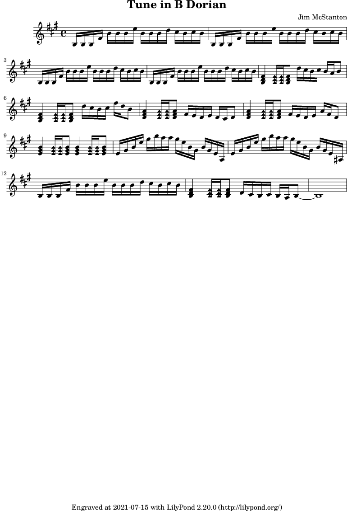

Today I wrote melody/tune in B Dorian. I think this one actually sounds like its in a mode outside of major and minor, unlike a few of my other attempts at working in Dorian.
This piece is definitely aimed at a guitar and should be playable without any ridiculous stretches, tempo may be problematic though (definitely is for me). Measures 10 and 11 should be fun to practice sweep picking on, requiring 2 stretches to the low E string at the end of each measure and a short stop on A4 that trips up the rhythm a bit.
